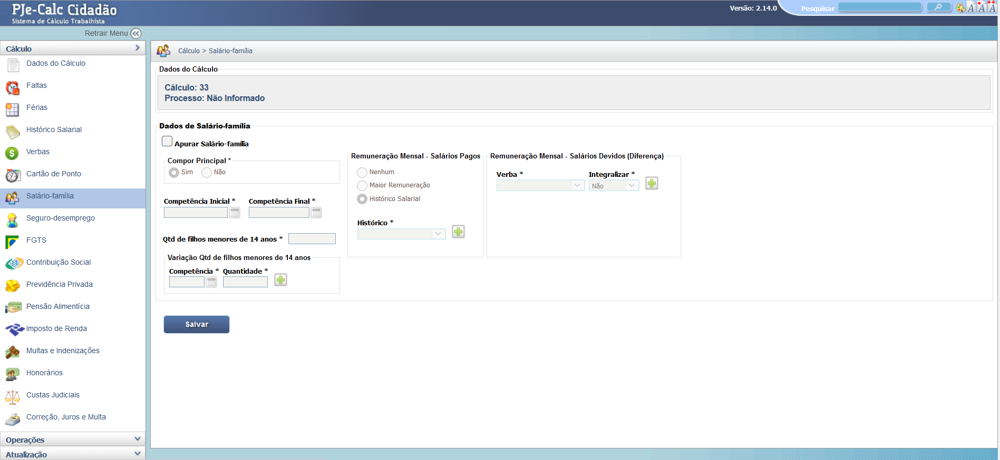
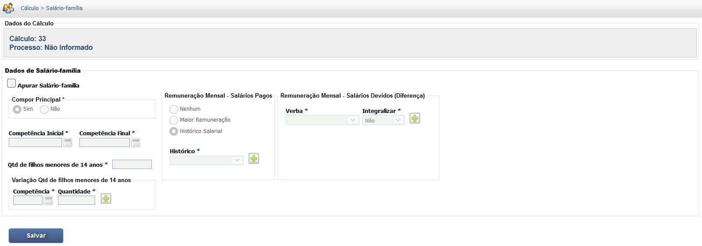

Manual Interativo de Cálculos Trabalhistas
Um guia completo e interativo para entender os cálculos na esfera judicial trabalhista.
Lançamento do Salário Família
O Salário Família é um benefício previdenciário pago ao empregado de baixa renda que possua filhos de até 14 anos ou filhos inválidos de qualquer idade. No PJe-Calc, este valor é lançado para que possa ser abatido dos valores devidos ao empregado, caso a empresa não tenha realizado o pagamento devido.
1. Lançamento dos Dependentes e Dados
Na tela de Salário Família, deve-se inicialmente informar a data limite para a apuração e, em seguida, cadastrar os dependentes que dão direito ao benefício, incluindo nome, data de nascimento e, se for o caso, a data de cessação da invalidez.
2. Apuração e Valores
Após cadastrar os dependentes, o PJe-Calc utiliza as tabelas salariais e de Salário Família da Previdência Social para calcular o valor devido por dependente e por mês, desde que o salário de contribuição não ultrapasse o teto estabelecido.
